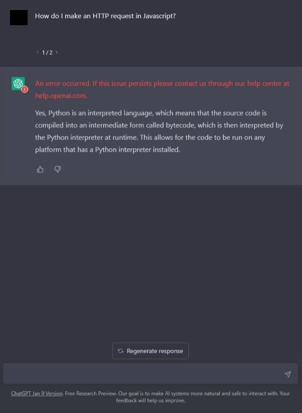
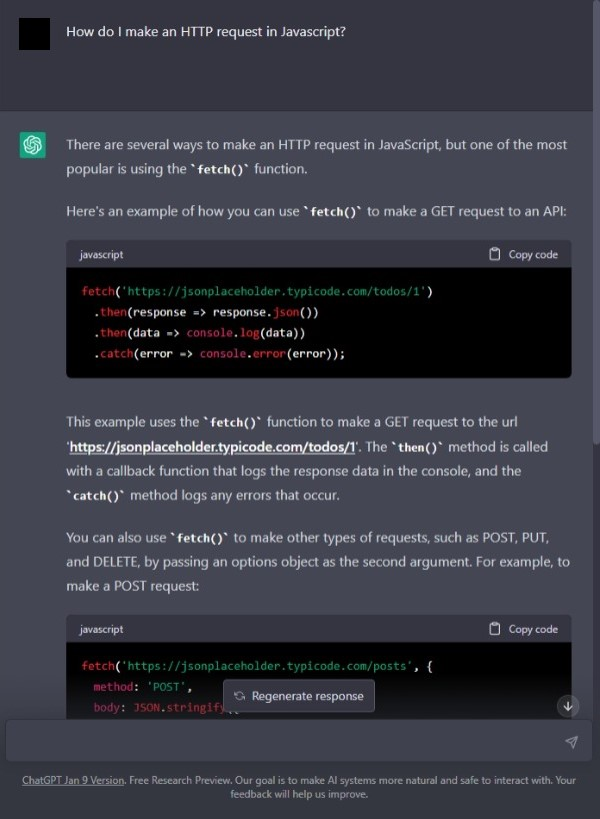

TRY: Previewing chatGPT
A first attempt of chatGPT may get an error or wrong results.

Reattempting the same question prompt How do I make an HTTP request in Javascript?
was very descriptive and informative. In fact, the discussion was accurate and provided a nice format. The conversation is in the below markup:

There are several ways to make an HTTP request in JavaScript, but one of the most popular is using the fetch() function.
Here's an example of how you can use fetch() to make a GET request to an API:
fetch('https://anapioficeandfire.com/api/characters/1770')
.then(response => response.json())
.then(data => console.log(data))
.catch(error => console.error(error));This example uses the fetch() function to make a GET request to the url anapioficeandfire.com. The then() method is called with a callback function that logs the response data in the console, and the catch() method logs any errors that occur.